Fullscreen mode
Just press »F« on your keyboard to show your presentation in fullscreen mode. Press the »ESC« key to exit fullscreen mode.
Overview mode
Press "Esc" or "o" keys to toggle the overview mode on and off. While you're in this mode, you can still navigate between slides, as if you were at 1,000 feet above your presentation.
Python for Data Scientist.
Data Distribution
Lesson 2
Coin - Head and Tails
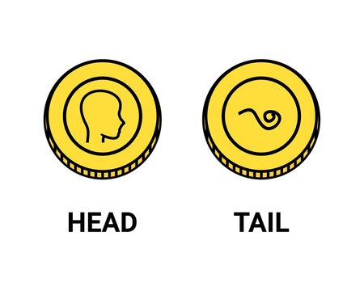Coin - Head and Tails
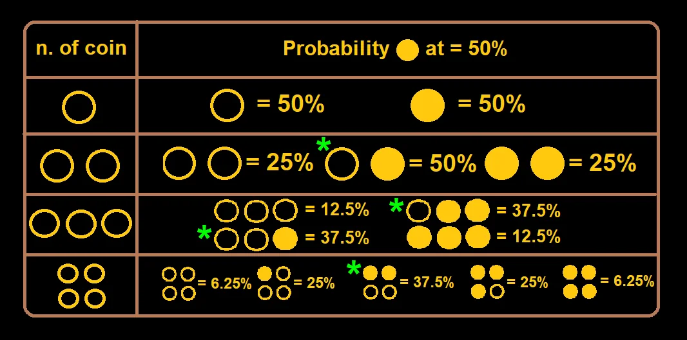Shape, Center, and Spread of a Distribution
The Shape of a Distribution
Symmetric and Non-Symmetric 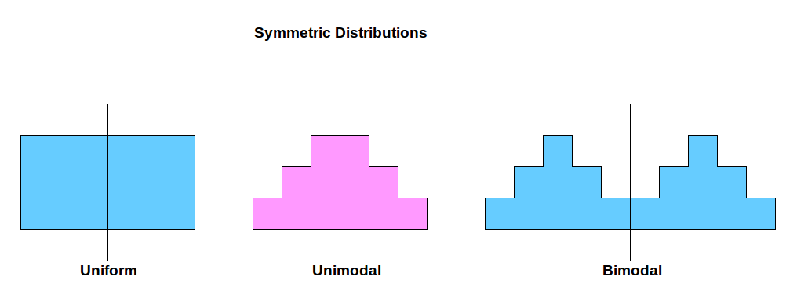The Shape of a Distribution
unimodal, bimodal, Skewed (Перекошен), bell-shaped...The Shape of a Distribution
unimodal, bimodal, Skewed (Перекошен), bell-shaped...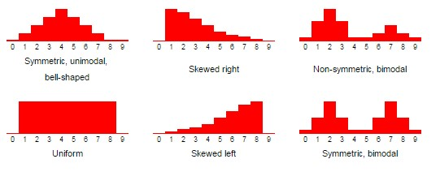
The Shape of a Distribution
unimodal, bimodal, Skewed (Перекошен), bell-shaped...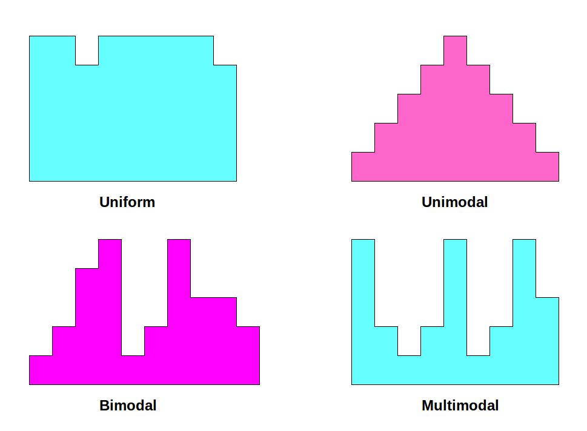
How we can use the Shape of a Distribution???
The Shape of a Distribution usage
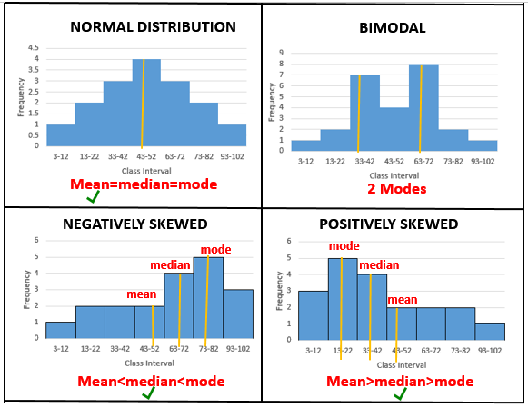Coin - Head and Tails
Coin - Head and Tails
Coin - Head and Tails
One coin (10 flips) - what the type? 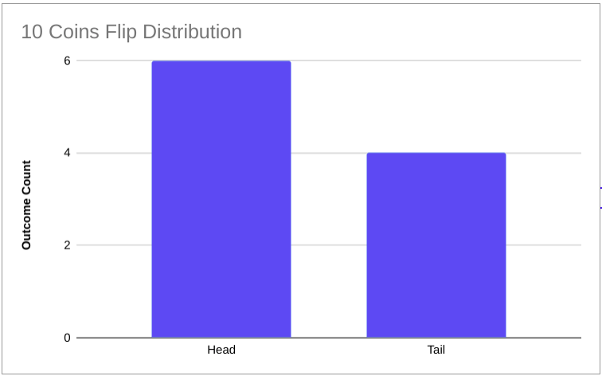Coin - Head and Tails
Two coins - what type of it? 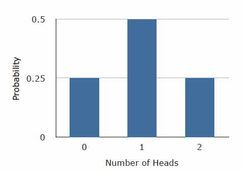Dice
There should be a Dice picture :)1 Dice - UNImodal
2 Dices - Normal
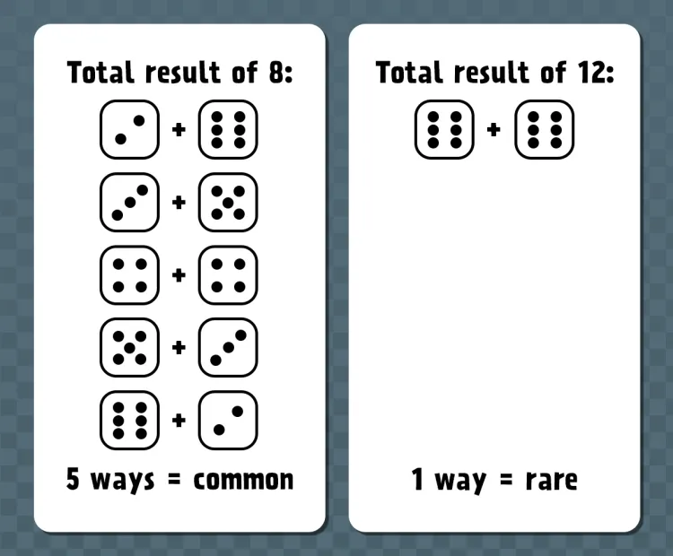2 Dices - Normal
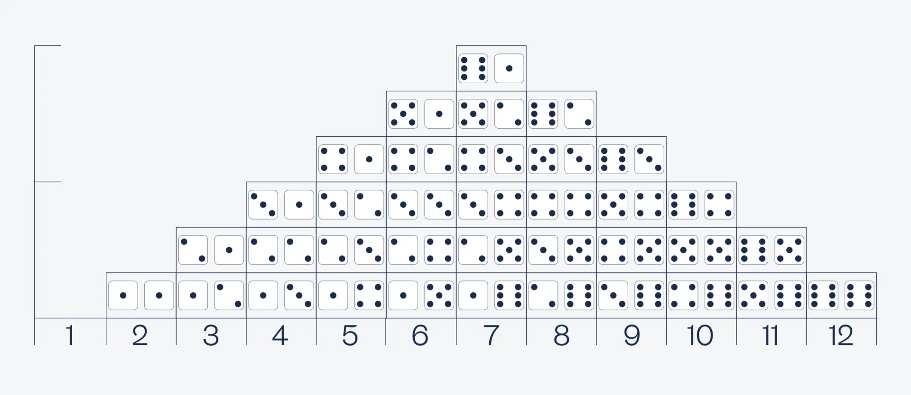2 Dices - Normal
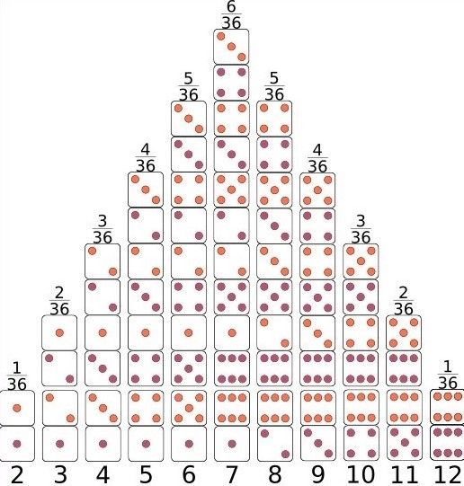Probobility and Expected value (first moment)
$P$ and $\operatorname{E}$Probobility of Dice
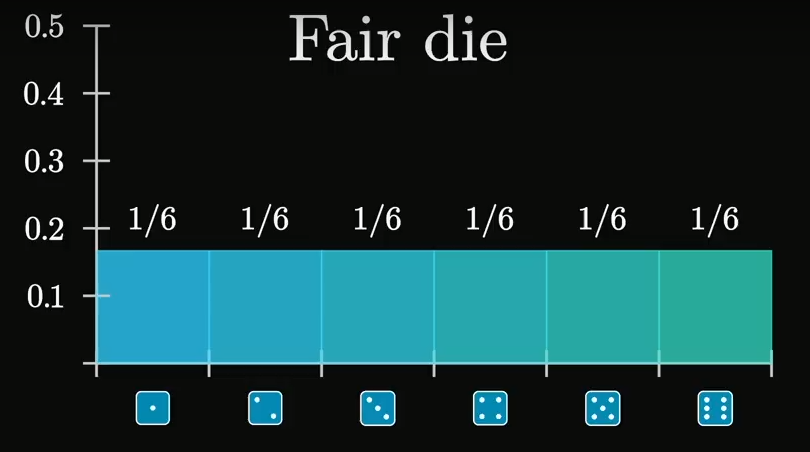Expected value
$\operatorname{E}$Coin
But, what we gonna do with coin?Coin
0.5???Coin
$$ \operatorname{E}[Head/Орел] $$$$ \operatorname{E}[Tail/Решка] $$
Super Farmer dice
Animal Husbandry (game) - Wikipedia
Super Farmer dice
\[ \operatorname{E}[Rabbit], \operatorname{E}[Sheep], \operatorname{E}[Horse] \] \[ \operatorname{E}[Wolf], \operatorname{E}[Fox] \]
Roulette probability
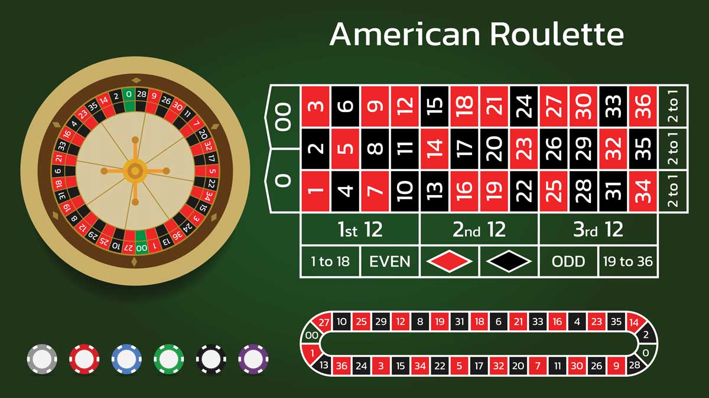Roulette probability
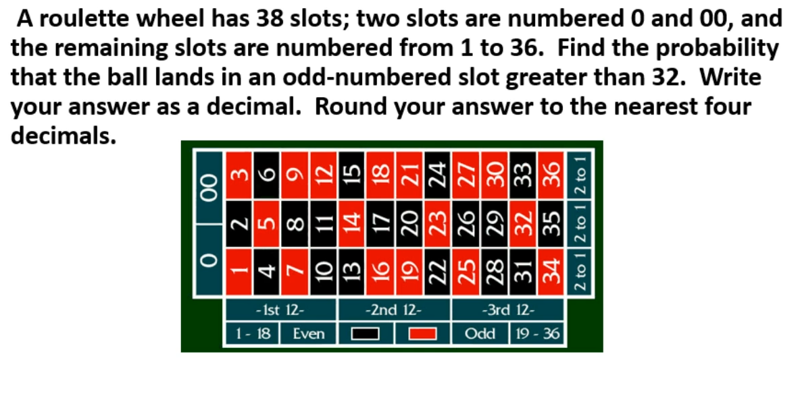Roulette probability
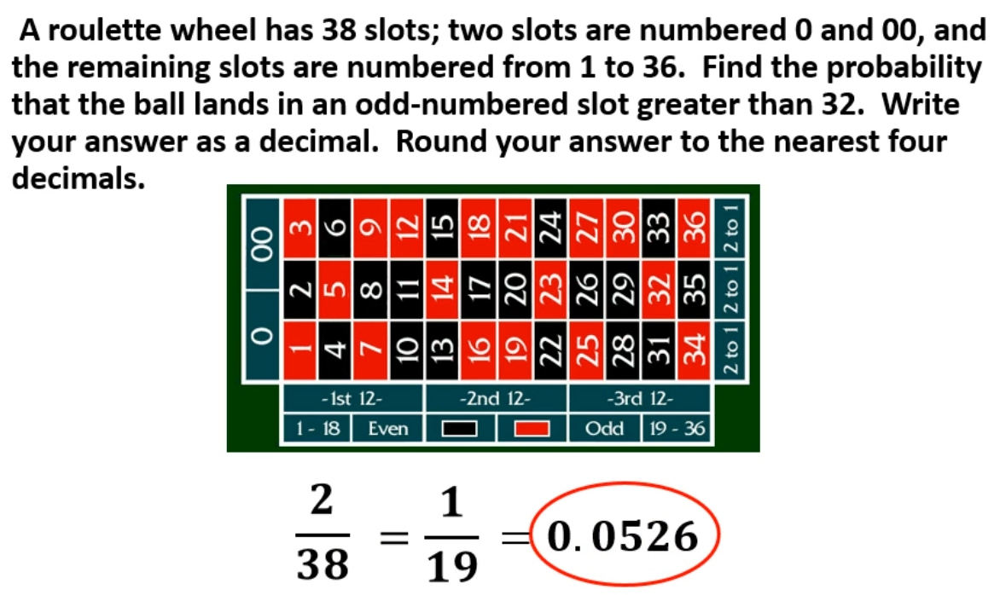Minesweeper
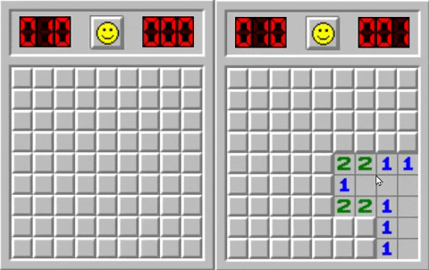Seeding Mines in Minesweeper
How are mines placed on the grid?
Random Placement
Mines are typically placed randomly on the board after the first click.
Ensuring Fairness
The first click is guaranteed to be safe. Mines are placed afterward to prevent immediate loss.
Probability of Placing a Mine
Concept:
In a game like Minesweeper, we are interested in the probability of placing a mine in a specific cell on a grid.
Formula:
Let the total number of cells in the grid be \( N \), and the total number of mines to be placed be \( M \).
The probability \( P \) of placing a mine in a specific cell is given by:
\[ P = \frac{M}{N} \]
Where:
\( M \) is the number of mines to be placed,
\( N \) is the total number of cells.
Example:
If there are 10x10 field = 100 cells and 10 mines, the probability of placing a mine in any specific cell is:
\[ P = \frac{10}{100} = 0.1 \]
Windows update Roulette
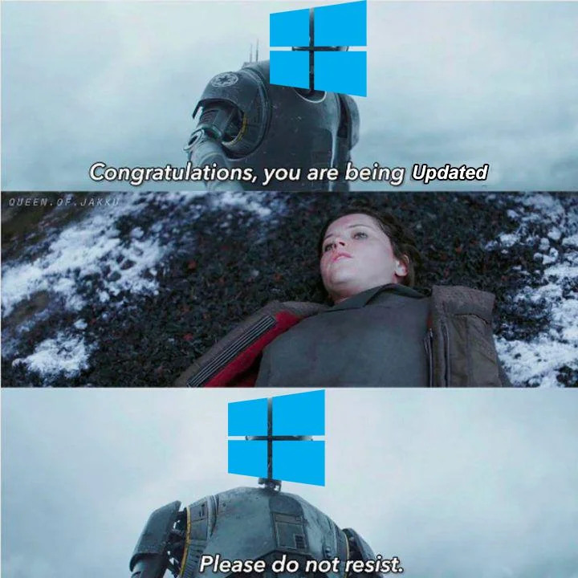Star Wars Meme on Reddit
Windows update Roulette
Server and Windows Hardware ID (HWID)Staged Rollout
- Canary Release
- Phased Rollout
Canary Release
The update is initially received by a small group of users and then scaled to everyone if no issues are detected.
Phased Rollout
The update is distributed gradually, for example, first to 10% of users, then to 25%, 50%, and so on.
Probability in games
ROR2 Tougher Times - GFMathLinks: